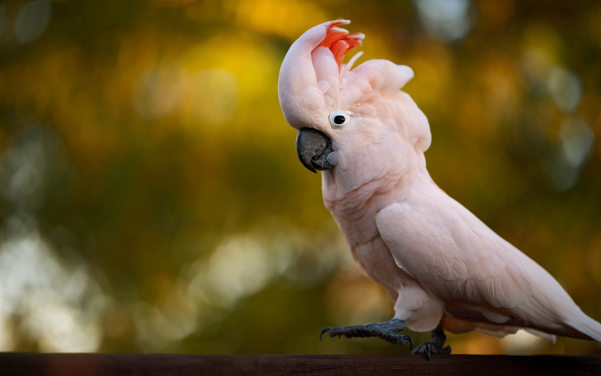

Le cacatoès

Cacatoès est le nom vernaculaire donné à des espèces de la même famille que les perroquets. On les reconnaît à leur crête de plumes qu'ils peuvent dresser à volonté sur leur tête. Certains apprennent très bien à imiter les sons des langues humaines. La longévité moyenne est entre 50 et 60 ans.
Le cacatoès est capable de s’accommoder et d’utiliser l’environnement dans lequel il se trouve à bon escient. Il est terriblement intelligent et adaptable, capable de jugement et de raisonnement. Il sait tirer profit de son milieu allant même jusqu’à se servir d’outils. Le cacatoès utilise beaucoup ses pattes pour manipuler des objets et pour préparer et ingérer ses aliments.
C'est un animal que l'on trouve surtout en Australie : sur la partie Nord et Est du continent et en Tasmanie ainsi qu'en Nouvelle-Guinée et dans les îles Aru. Animaux de compagnie, un certain nombre d'entre eux se sont échappés et ont créé des colonies accidentelles autour de Perth, en Australie-Occidentale, en Nouvelle-Zélande et en Indonésie. Ce sont des oiseaux sédentaires vivant en grandes bandes en dehors de la période de reproduction dans toutes les régions boisées et surtout au voisinage de l'homme.